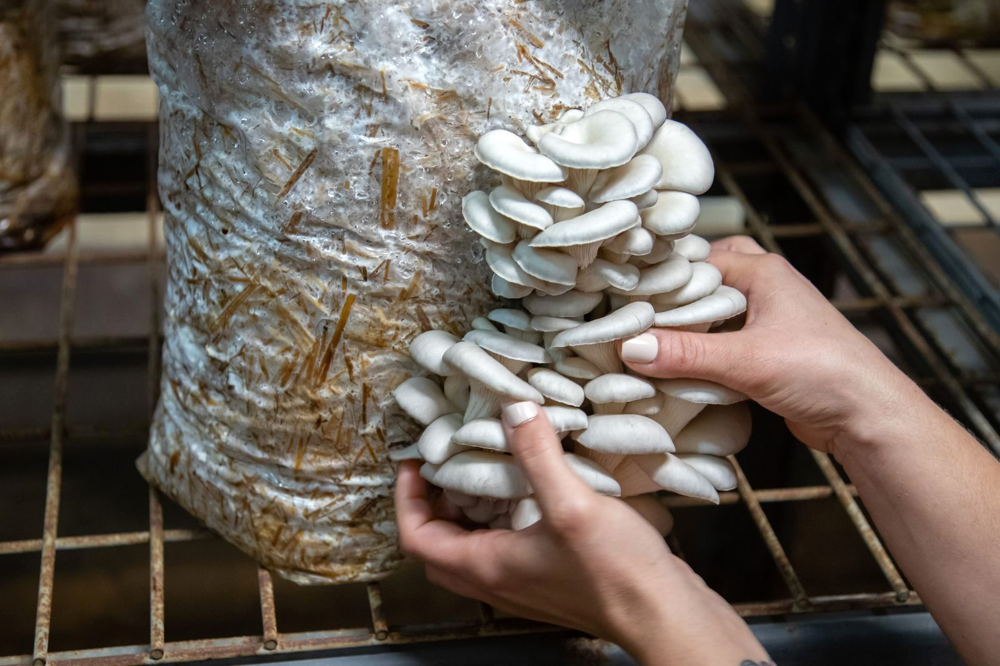
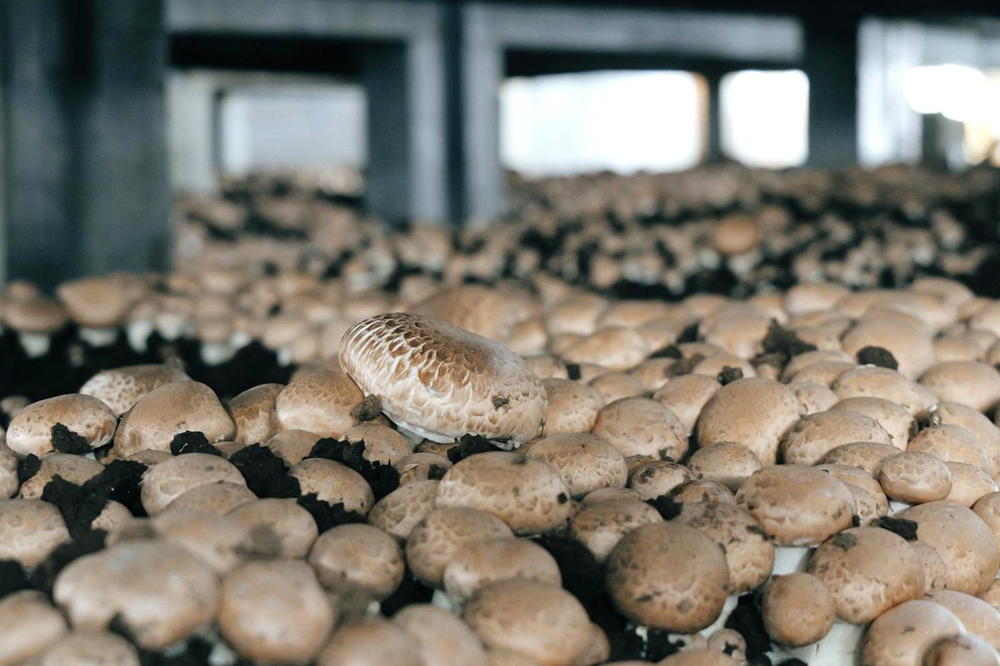
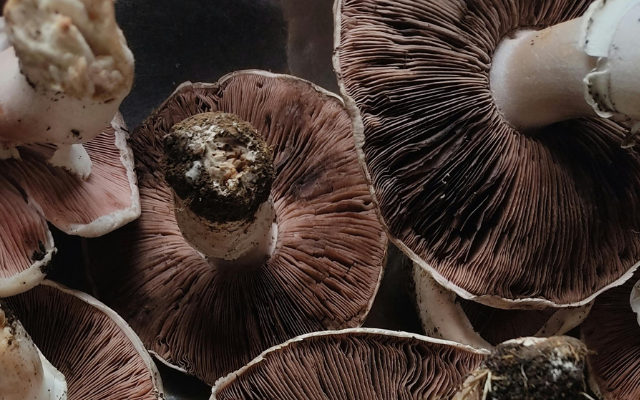
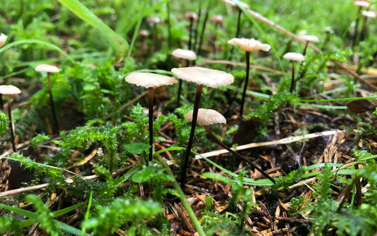
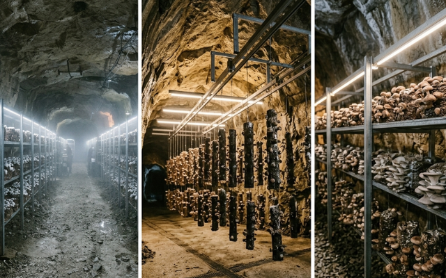
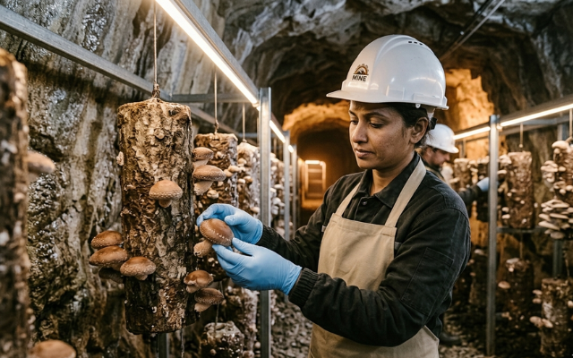
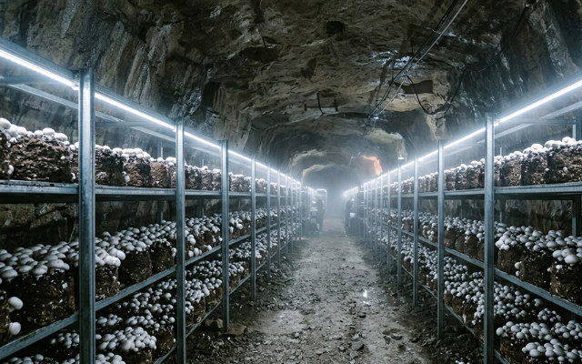
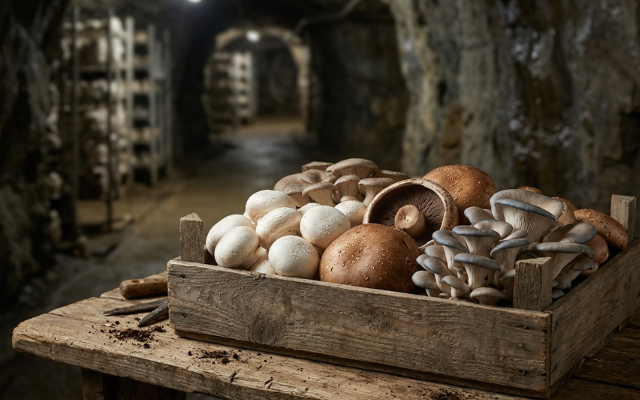
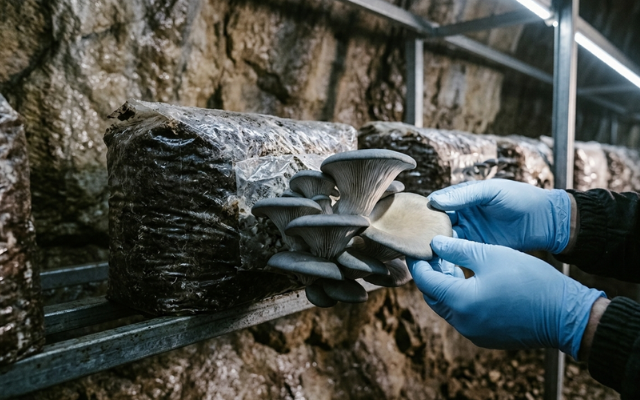
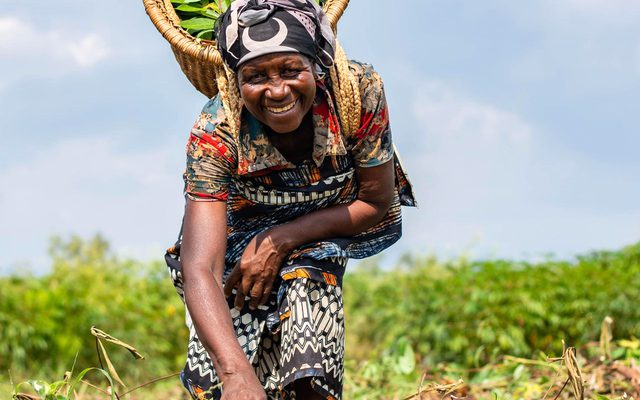

सुविकल्प: Mine Repurposing Tool
Select factors and sub-factors to discover suitable repurposing options for your mining site
![Coal Controller Organisation emblem]()


Mushroom farming offers a sustainable mine repurposing opportunity by utilizing abandoned mine buildings, underground spaces, and reclaimed land for commercial cultivation. The naturally cool and humid conditions in mine areas support year-round production with minimal environmental impact. This approach promotes livelihood generation, women-led self-help groups, agri-based entrepreneurship, and local employment while ensuring productive reuse of post-mining infrastructure.
Successful implementation requires proper hygiene management, adequate ventilation and water supply, technical skill development, strong market linkages, and sustainable long-term operations.
Post-mining site context, suitability criteria, scale matrix, and owner-side readiness before committing to a Mushroom Farming project.
This concept proposes the development of Mushroom Farming Zones on closed, reclaimed, or repurposed coal mine land as part of a sustainable mine-closure and post-mining land-use strategy. The objective is to convert under-utilized mine land, abandoned built spaces, reclaimed platforms, workshops, storage sheds, or low-productivity land parcels into controlled-environment mushroom production, training, processing, and livelihood clusters.
Unlike conventional agriculture, mushroom farming:
Mushroom cultivation is particularly relevant for mine-closure repurposing because it can use compact sites, repurposed buildings, low-disturbance land parcels, and cluster-based production systems. It is an indoor crop, does not require arable land, has a short crop cycle, and provides high yield per unit time. This aligns with India's mine-closure approach, where frameworks such as L.I.V.E.S, R.E.C.L.A.I.M, and A.R.T.H.A promote ecological restoration, community development, green finance, and productive repurposing of closed mine areas.
Mushroom farming is highly suited for closed coal mine areas because it is land-efficient, livelihood-intensive, low-footprint, modular, and scalable. It can be developed in reclaimed land parcels, unused buildings, closed mine infrastructure, training centres, community sheds, or purpose-built low-cost structures.
Key Benefits:
Mushroom cultivation can convert agricultural, industrial, forestry, and household wastes into nutritious food. India has abundant agricultural residues and labour, which are key enabling factors for mushroom farming.
The following matrix provides a structured checklist for assessing the suitability of the proposed site for the selected repurposing option. It identifies the key physical, technical, environmental, infrastructure, legal, and owner-side readiness parameters that should be reviewed before the project is advanced to the next stage of development. The purpose of this matrix is to help the project owner understand existing site conditions, technical requirements, potential constraints, and preparatory actions required before feasibility studies, approvals, or tendering are initiated.
| Category | What to Assess / Prepare | Why it Matters | Owner-Side Readiness |
|---|---|---|---|
| Land status | Closure status, land ownership, mine-closure permissibility, post-mining land-use approval | Legal viability for food production, enterprise activity, training, and processing | Closure note |
| Existing structures | Availability of unused sheds, workshops, stores, staff buildings, warehouses, or community halls | Mushroom farming benefits from indoor structures and controlled space | Built-asset inventory |
| Site safety | Subsidence, slope stability, restricted zones, abandoned openings, haul-road risks | Safe access for workers, SHGs, trainees, and transport | Safety zoning plan |
| Environmental condition | Dust, emissions, mine drainage, chemical exposure, waste dump proximity | Prevents contamination and protects food-grade production | Environmental screening |
| Water availability | Clean water for substrate wetting, cleaning, humidification, and processing | Critical for hygiene, humidity control, and production reliability | Water plan |
| Power supply | Electricity for ventilation, cooling, humidification, lighting, drying, and cold storage | Required especially for button mushroom and year-round commercial units | Power assessment |
| Temperature and humidity | Local climate, seasonal suitability, heat stress, cooling need | Determines species choice: oyster, milky, button, shiitake, paddy straw | Agro-climatic note |
| Raw material availability | Paddy straw, wheat straw, sawdust, maize stalk, cotton waste, bagasse, poultry manure, gypsum | Determines substrate and compost economics | Biomass supply map |
| Market proximity | Nearby towns, hotels, retail markets, institutional buyers, cold-chain access | Mushrooms are perishable and need quick marketing | Market assessment |
| Community proximity | SHGs, FPOs, land-losers, youth groups, women groups, rural entrepreneurs | Ensures livelihood integration | Beneficiary mapping |
| Access | Roads, vehicle access, loading/unloading points, cold-chain mobility | Enables substrate transport and mushroom dispatch | Access plan |
| Hygiene and biosecurity | Cleanable floors, drainage, pest control, quarantine space, waste disposal | Prevents crop failure, disease, and contamination | Biosecurity plan |
| Processing potential | Space for drying, packing, cold storage, value addition, spawn unit | Improves profitability and shelf life | Processing feasibility note |
| Spent substrate use | Composting area, vermicompost unit, nursery linkage, mine-land restoration use | Supports circular economy and soil improvement | Waste-to-resource plan |
The following matrix presents an indicative relationship between available site area, project scale, technical configuration, and likely development potential. It is intended to support preliminary planning by helping the project owner identify the appropriate scale and configuration for the proposed repurposing option. The values and recommendations are indicative and should be refined through detailed feasibility studies, site surveys, engineering assessments, and relevant technical and commercial evaluations.
| Land / Built Area | Recommended Scale | Configuration | Use Case |
|---|---|---|---|
| 0.05–0.25 ha / 500–2,500 sq ft | Pilot mushroom unit | 5–25 growing rooms or low-cost oyster/milky units, training room, packing table | Proof of concept, SHG training, livelihood demonstration |
| 0.25–1 ha / 2,500–10,000 sq ft | Community mushroom cluster | Multiple SHG units, substrate preparation area, water and hygiene facilities, small drying/packing unit | SHG livelihood and local market supply |
| 1–3 ha / 10,000–40,000 sq ft | Integrated mushroom production zone | Oyster/milky/button units, substrate yard, composting/vermicompost unit, cold room, packaging facility | Cluster-level production and employment |
| 3–5 ha | Mushroom enterprise park | Spawn unit, compost/substrate unit, controlled-environment growing rooms, processing and branding unit, training centre | PPP/CSR-supported commercial-livelihood model |
| 5 ha+ | Regional mushroom and bioresource hub | Production clusters, spawn lab, substrate aggregation, cold chain, value addition, incubation, training, compost use for mine-land restoration | Just-transition flagship and regional enterprise model |
The National Horticulture Board DPR provides benchmark infrastructure for 50 TPA, 100 TPA, 500 TPA, and larger mushroom units. For example, the NHB DPR shows a 50 TPA unit with 2,400 sq ft cropping rooms and a 100 TPA unit with 5,400 sq ft cropping room area.
Implementation models, comparative assessment, and model-wise responsibility logic for mine-area Mushroom Farming development.
The following table outlines the possible implementation models that may be considered for developing the proposed repurposing project. These models differ in terms of ownership structure, funding responsibility, private sector participation, operational control, and long-term risk allocation. The purpose of this table is to help the project owner compare broad development routes and select an implementation approach that aligns with its financial capacity, institutional preference, risk appetite, and long-term asset management objectives.
| Model | Suitability | Comment |
|---|---|---|
| EPC | Moderate | Good for basic sheds, growing rooms, water supply, hygiene infrastructure, substrate yard, training hall, and packing area |
| EPC + O&M | High | Strong for owner-controlled livelihood model with SHG training, technical handholding, crop-cycle management, and market linkage |
| BOOT | High | Suitable for commercial mushroom production, processing, cold chain, and eventual asset transfer |
| BOO | Moderate | Suitable for private commercial mushroom venture; weaker for community integration unless contractually mandated |
| DBFOT | High | Best for large mushroom parks requiring private finance, controlled-environment infrastructure, processing, branding, and cold chain |
| Concession / Lease-Develop-Operate | Very High | Strong for community-linked production, SHG/FPO roles, lease fee, revenue share, and local employment obligations |
| Hybrid | Very High | Most flexible and balanced; combines owner land/building support, CSR/government schemes, technical agency, private operator, SHG/FPO participation, and market linkage |
The following comparative assessment evaluates the major implementation models across key decision parameters such as investment requirement, ownership control, financing responsibility, contractual complexity, risk transfer, and long-term economic benefit. This matrix is intended to support early-stage decision-making by highlighting the relative strengths and limitations of each model. The final choice of model should be guided by the specific circumstances of the project, including its scale, commercial viability, applicable policy framework, and the owner's institutional preference.
| Evaluation Parameter | EPC | EPC+O&M | BOOT | BOO | DBFOT | Concession | Hybrid |
|---|---|---|---|---|---|---|---|
| Upfront investment by Mine Owner | High | High–Moderate | Low–Moderate | Low | Low–Moderate | Low–Moderate | Variable |
| Ownership retained by Mine Owner | Yes | Yes | Land retained | Limited | Usually land retained | Land retained | Usually retained |
| Suitability for welfare objective | High | Very High | High if mandated | Moderate | High | Very High | Very High |
| Suitability for local livelihood | Moderate | Very High | High | Moderate | High–Very High | Very High | Very High |
| Suitability for ecological restoration | Moderate | High | High | Moderate | High | High | Very High |
| Suitability for SHG / FPO integration | Moderate | High | Moderate | Low–Moderate | High if required | Very High | Very High |
| Revenue potential | Low–Moderate | Moderate–High | High | High | High | Moderate–High | Variable–High |
| O&M burden on owner | High | Moderate | Low | Low | Low | Low–Moderate | Shared |
| Risk to Mine Owner | High | Moderate | Low–Moderate | Low | Low–Moderate | Low–Moderate | Shared |
| Overall suitability for Mushroom Farming | Moderate | High | High | Moderate | High | Very High | Very High / Most Suitable |
The following table explains how major project responsibilities are typically allocated under different implementation models. It covers key functional areas such as site availability, financing, design and construction, regulatory approvals, operation and maintenance, revenue collection, asset ownership, and end-of-term transfer. This helps clarify the respective roles of the project owner, private developer, EPC contractor, operator, or concessionaire, and supports the preparation of tender documents and contractual structures.
| Responsibility Area | EPC | EPC+O&M | BOOT | BOO | DBFOT | Concession | Hybrid |
|---|---|---|---|---|---|---|---|
| Site / land availability | Mine Owner | Mine Owner | Mine Owner / authority | Mine Owner / developer | Mine Owner / authority | Mine Owner / authority | Mine Owner / shared |
| Built-asset mapping | Mine Owner / consultant | Mine Owner + O&M agency | Developer / technical expert | Developer | Concessionaire | Concessionaire / expert agency | Shared |
| Species selection | Mine Owner / consultant | Mine Owner + O&M agency | Developer / expert | Developer | Concessionaire | Concessionaire / mushroom expert | Shared with community inputs |
| Growing room construction | EPC contractor | EPC contractor | Developer | Developer | Concessionaire | Concessionaire / operator | Shared |
| Substrate / compost unit | EPC contractor | EPC contractor | Developer | Developer | Concessionaire | Concessionaire / operator | Shared with local groups |
| Spawn procurement / production | Mine Owner / vendor | O&M agency / vendor | Developer | Developer | Concessionaire | Concessionaire / operator | Shared / technical partner |
| Crop-cycle management | Mine Owner | O&M agency | Developer | Developer | Concessionaire | Concessionaire / operator | SHG / FPO / operator |
| Hygiene and biosecurity | Mine Owner | O&M agency | Developer | Developer | Concessionaire | Concessionaire | Shared / technical partner |
| Harvesting | Mine Owner-controlled | O&M agency + SHGs | Developer | Developer | Concessionaire | Concessionaire / SHG / FPO | SHG / FPO / operator |
| Processing and packaging | Mine Owner | O&M agency / market partner | Developer | Developer | Concessionaire | Concessionaire / operator | Shared / cluster-based |
| Spent substrate management | Mine Owner | O&M agency | Developer | Developer | Concessionaire | Concessionaire / operator | Shared with restoration team |
| Community mobilization | Mine Owner | Mine Owner + O&M agency | Developer if mandated | Developer if mandated | Concessionaire if mandated | Concessionaire + NGO / FPO | NGO / SHG / FPO + owner |
| Local employment | Mine Owner-controlled | Mine Owner-controlled through contract | Contract-based | Developer policy | Contract-based | Contract-based | Strongly configurable |
| SHG / FPO participation | Mine Owner-controlled | Mine Owner + O&M agency | Contract-based | Optional unless mandated | Contract-based | Strong contractual role | Core feature |
| Market linkage | Mine Owner | O&M agency / market partner | Developer | Developer | Concessionaire | Concessionaire / FPO | FPO / operator / private buyer |
| Food safety compliance | Mine Owner | Mine Owner + O&M agency | Developer | Developer | Concessionaire | Concessionaire | Shared |
| Asset transfer at end | No | No | Yes | No | Yes | As agreed | As agreed |
| Best suited role | Basic mushroom infrastructure creator | Owner-controlled mushroom operator | Commercial developer-operator | Private mushroom owner | Structured PPP concessionaire | Long-term livelihood operator | Multi-party livelihood + commercial platform |
Funding logic, revenue generation, local livelihood potential, and combined comparison across all implementation models.
The following table presents the broad funding logic for each implementation model. It explains who is expected to finance the project, the level of owner-side funding requirement, and the commercial rationale behind each structure. This section is intended to help the project owner assess whether the project is more suitable for owner-funded development, private investment, public-private partnership, lease or concession structure, or a hybrid funding arrangement.
| Model | Funding Source | Owner Funding Requirement | Suitability |
|---|---|---|---|
| EPC | Mine owner budget / mine closure fund / CSR | High | Suitable for basic mushroom sheds, growing rooms, water supply, hygiene area, substrate yard, packing room, training facility, and initial equipment |
| EPC + O&M | Mine owner budget + O&M budget + CSR | High to Moderate | Strong fit where owner wants control over welfare, SHG participation, technical handholding, crop-cycle support, and market linkage |
| BOOT | Private developer capital + possible CSR / VGF / grant support | Low to Moderate | Suitable for commercial mushroom production, spawn unit, cold chain, processing, branding, and eventual asset transfer |
| BOO | Private developer capital | Low | Suitable only for commercially driven mushroom projects; less preferred where community control is important |
| DBFOT | Private concessionaire + public/CSR support + possible VGF | Low to Moderate | Suitable for large mushroom parks with controlled-environment growing rooms, processing units, cold storage, branding, training centres, and value-added products |
| Concession / Lease-Develop-Operate | Private operator / FPO / SHG federation / NGO / CSR / blended finance | Low to Moderate | Very suitable for community-linked mushroom clusters with livelihood obligations, lease fee, revenue sharing, training, and local employment |
| Hybrid | Mine owner + CSR + government schemes + private operator + SHG/FPO + NGO + grants | Variable | Most suitable for balancing livelihood, food enterprise, circular economy, spent-substrate use, and owner revenue participation |
The following table explains how revenue may be generated under different implementation models and identifies who is likely to receive the principal project income. It also describes the nature and extent of the financial benefit available to the project owner, whether through direct project revenue, cost savings, lease income, concession fees, revenue sharing, service charges, or eventual asset transfer. This comparison is intended to support the selection of a commercially appropriate model for the proposed repurposing project.
| Model | How Revenue is Generated | Who Receives Main Revenue | Owner's Financial Benefit |
|---|---|---|---|
| EPC | Sale of fresh mushrooms, dried mushrooms, mushroom powder, pickles, spawn, compost, training fees, substrate manure | Mine Owner | Full revenue retained by owner, but owner bears full CAPEX, O&M, crop failure, hygiene, market, and working-capital risk |
| EPC + O&M | Same revenue streams: fresh mushrooms, value-added products, spawn, packing, training, compost, institutional sales | Mine Owner after paying O&M agency | High benefit; owner retains revenue while outsourcing technical operations and management |
| BOOT | Developer earns from mushroom production, spawn, compost, cold storage, processing, branding, institutional sales, training during concession period | Developer / concessionaire during concession | Lease rent, concession fee, revenue share, local economic uplift, and asset transfer at end |
| BOO | Long-term revenue from mushroom production, processing, branded sales, spawn, dried mushroom, powder, retail and institutional markets | Private developer | Limited direct benefit; typically lease rent, fixed charges, or premium payments |
| DBFOT | Structured revenue from mushroom production, processing, cold chain, branding, training centre, spawn production, composting, value-added products | Concessionaire during concession | Concession fee, lease rent, revenue share, performance-linked payments, and asset transfer at end |
| Concession | Revenue from mushroom operations, SHG/FPO-based production, processing, packing, spawn supply, training, compost, institutional sales | Concessionaire / operator as per agreement | Lease rentals, revenue share, improved land value, and indirect socio-economic benefits |
| Hybrid | Mixed revenue streams: mushroom sales, SHG/FPO enterprises, dried products, powder, pickles, spawn, compost, training, CSR/grants, branding, institutional sales | Shared between owner, operator, SHG/FPO, NGO as structured | Variable to high; owner benefits through revenue share, reduced O&M burden, ESG gains, and enhanced land value |
The following table assesses the likely local livelihood and employment potential of each implementation model. It considers the extent to which each model can support construction-phase jobs, long-term operational employment, local procurement opportunities, skill development, community participation, and associated support services. This section is particularly relevant where the repurposing project is expected to contribute to post-mining or post-operational economic transition and sustained local community benefit.
| Model | Local Job Potential | Why | Overall Suggestibility |
|---|---|---|---|
| EPC | Moderate | Creates short-term jobs in shed construction, growing-room setup, substrate yard preparation, water system, racks, hygiene area, and basic training. Long-term jobs depend on owner-led operations. | Moderate |
| EPC + O&M | High to Very High | Supports sustained employment in substrate preparation, spawning, bag filling, crop management, harvesting, grading, packing, cleaning, disease monitoring, processing, and SHG facilitation. | Very High |
| BOOT | High | Generates jobs during development and operation. Local employment can be strong if the agreement mandates local hiring, SHG/FPO participation, training, and local procurement. | High |
| BOO | Moderate | Can create production, processing, packing, cold-chain, and marketing jobs, but local livelihood depends mainly on private developer policy unless contractually mandated. | Moderate |
| DBFOT | High to Very High | Suitable for large mushroom parks with growing rooms, substrate/compost units, spawn lab, cold chain, processing, branding, training centres, and value-added production. | High to Very High |
| Concession | Very High | Strong model for long-term local livelihood through SHG/FPO participation, production clusters, processing, packaging, training, market linkage, and compost enterprises. | Very High |
| Hybrid | Very High | Best suited for combining mine-owner support, private technical expertise, NGO facilitation, SHG/FPO participation, CSR support, government schemes, and community benefit obligations. | Very High / Most Suitable |
The following combined comparison brings together three important dimensions of project structuring: revenue potential, owner-side financial benefit, and local livelihood generation. It provides a consolidated view of how each implementation model performs across commercial, institutional, and community-development perspectives. This matrix is intended to support balanced decision-making where the objective extends beyond financial return to include sustainable site reuse and long-term local economic benefit.
| Model | Main Revenue Source | Owner Profitability | Local Job Creation | Overall Comment |
|---|---|---|---|---|
| EPC | Fresh mushrooms, dried mushrooms, spawn, compost, training fees, value-added products | Moderate to High, but owner bears full CAPEX, O&M, crop-cycle, hygiene, disease, market, and working-capital risk | Moderate | Useful for initial unit setup, but weak for long-term livelihood unless followed by structured O&M |
| EPC + O&M | Mushroom sales, processing, packaging, spawn, compost, training, institutional sales | High, as owner retains revenue after O&M payments | High to Very High | Strong where owner wants control, welfare impact, and sustained employment |
| BOOT | Commercial mushroom production, spawn, compost, cold chain, processing, branding, training | Moderate through concession fee, lease rent, revenue share, and eventual asset transfer | High | Suitable for commercial mushroom farming with mandatory livelihood clauses |
| BOO | Long-term private revenue from mushrooms, processed products, spawn, compost, retail and institutional sales | Low to Moderate, mostly from lease rent, fixed charges, or premium | Moderate | Use cautiously where community benefit and owner control are not primary |
| DBFOT | Mushroom value chain, processing, cold chain, branding, training centre, spawn lab, compost unit | Moderate to High through concession fee, lease rent, revenue share, and transfer terms | High to Very High | Good for large structured PPP projects needing private finance and professional operation |
| Concession | Mushroom operations, SHG/FPO production, spawn supply, processing, training, compost, market linkage | Moderate to High through lease rent, concession fee, revenue share, and improved land value | Very High | Very suitable for community-linked mushroom farming with livelihood obligations |
| Hybrid | Mixed revenue from mushrooms, SHG/FPO enterprises, spawn, dried products, training, CSR, grants, compost, institutional sales | Variable to High depending on revenue-sharing and support structure | Very High | Most suitable for balancing mine-closure, livelihood, circular economy, ecological, and commercial objectives |
Pre-RFP readiness, post-award scope, and the 15-step implementation pathway for mine-area Mushroom Farming.
The following section identifies the key owner-side preparatory actions that should ideally be completed before issuing the first Request for Proposal. These actions are aimed at reducing uncertainty for prospective bidders, improving project bankability, clarifying site availability, identifying approval pathways and risks, and defining the technical and commercial scope of the project. Completing these preparatory steps before tendering can improve bid quality, attract credible responses, and reduce the risk of delays during project implementation.
Before issuing an RFP for a mushroom-farming-based mine repurposing project, the mine owner should prepare the following in priority order:
The following section lists the principal activities that may be undertaken by the selected contractor, developer, concessionaire, operator, or implementation agency after award of the project. These activities generally include detailed site investigations, engineering design, statutory submissions and approvals, equipment procurement, construction, commissioning, operational planning, staff training, and performance monitoring. The distinction between pre-RFP owner preparedness and post-award implementation responsibilities helps ensure an appropriate and efficient allocation of effort across the project development cycle.
After award, the selected concessionaire / contractor / O&M agency / mushroom-farming operator can take up the following activities in chronological order:
The following implementation pathway presents a practical high-level sequence for advancing the proposed repurposing concept from initial approval through to project execution and long-term operation. It outlines the broad stages of concept approval, preliminary studies, model selection, bid preparation, procurement, detailed design, statutory approvals, construction, commissioning, and ongoing operation. This pathway is indicative and should be adapted to reflect the specific complexity, regulatory requirements, financing structure, and site conditions applicable to the project.
Way forward, preferred models, recommended strategy, references, and abbreviations for mine-area Mushroom Farming.
The following way forward summarizes the preferred development approach for the proposed repurposing option, based on the assessment presented in PRISM (Post Mining Repurposing Implementation and Strategy Models). It identifies the most suitable implementation models in order of preference, highlights key technical and due-diligence considerations, and outlines the recommended next steps and broad development logic. This section is intended to guide internal decision-making and support the project owner in progressing from concept-stage evaluation toward feasibility assessment, project structuring, regulatory approvals, and implementation planning.
Preferred Models, in order: (1) Hybrid Model, (2) Concession / Lease-Develop-Operate, (3) EPC + O&M / Facility Management, (4) DBFOT, (5) BOOT
Why preferred: Hybrid is preferred because mushroom farming needs small built-up space, technical training, crop-cycle management, SHG participation and market linkage. The hybrid mix should include owner-provided space + SHG / FPO production + technical agency + buyer / processor linkage.
Secondary option: EPC may be used for pilot-scale demonstration infrastructure; BOO should be used only where it is purely commercial and community obligations are secured.
Suggestable technical care: Temperature, humidity, ventilation, substrate supply, hygiene, pest control, drying, packing, cold storage and market access must be ensured.
Recommended development logic: Begin with a 500–2,500 sq ft pilot or 0.05–0.25 ha cluster. Scale after 2–3 successful crop cycles into substrate preparation, drying, packing and cold-chain facilities.
Disclaimer — All repurposing interventions proposed under P.R.I.S.M. shall remain subject to applicable mining laws, land-use regulations, environmental approvals, mine-closure conditions, forest and biodiversity regulations, groundwater permissions, and any other statutory approvals as may be applicable. Land ownership is proposed to remain with the mine owner / competent authority unless otherwise permitted under applicable law.
| Abbreviation | Full Form |
|---|---|
| AHU | Air Handling Unit |
| APEDA | Agricultural and Processed Food Products Export Development Authority |
| BOO | Build, Own, Operate |
| BOOT | Build, Own, Operate, Transfer |
| CAPEX | Capital Expenditure |
| CSR | Corporate Social Responsibility |
| DAY-NRLM | Deendayal Antyodaya Yojana – National Rural Livelihoods Mission |
| DBFOT | Design, Build, Finance, Operate, Transfer |
| DPR | Detailed Project Report |
| EPC | Engineering, Procurement and Construction |
| ESG | Environmental, Social and Governance |
| FM | Facility Management |
| FPO | Farmer Producer Organization |
| FSSAI | Food Safety and Standards Authority of India |
| ICAR | Indian Council of Agricultural Research |
| KVK | Krishi Vigyan Kendra |
| MSME | Micro, Small and Medium Enterprises |
| NGO | Non-Governmental Organization |
| NHB | National Horticulture Board |
| O&M | Operation and Maintenance |
| PIB | Press Information Bureau |
| PMEGP | Prime Minister's Employment Generation Programme |
| PPP | Public-Private Partnership |
| RFP | Request for Proposal |
| SHG | Self-Help Group |
| TPA | Tonnes Per Annum |
| VGF | Viability Gap Funding |








Links open external websites. Coal Controller Organisation does not endorse third-party content.


Disclaimer: Inclusion of an agency on this list does not constitute endorsement, empanelment, or recommendation by the Coal Controller Organisation or the Ministry of Coal, Government of India. Mine owners and project proponents are advised to conduct their own due diligence process before engaging any agency.
Disclaimer: Inclusion of an expert does not constitute endorsement, empanelment, or recommendation by the Coal Controller Organisation or the Ministry of Coal, Government of India. Users are advised to independently verify credentials and suitability before engaging any individual.